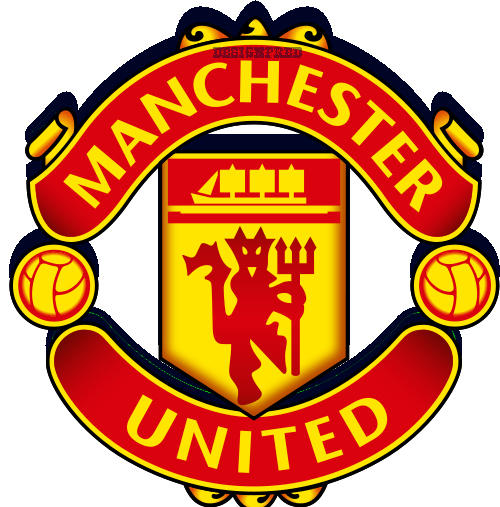

Red Devils
Home
Squad
News
History
External
Trending Now
Manchester United signs new striker! | Pogba out for the season! | TenHag future at risk | Rashford scores a hat-trick!
Weekly Top News
Upcoming Transfer window
Ten Hag's Future
A. Garnacho and upcoming transfers